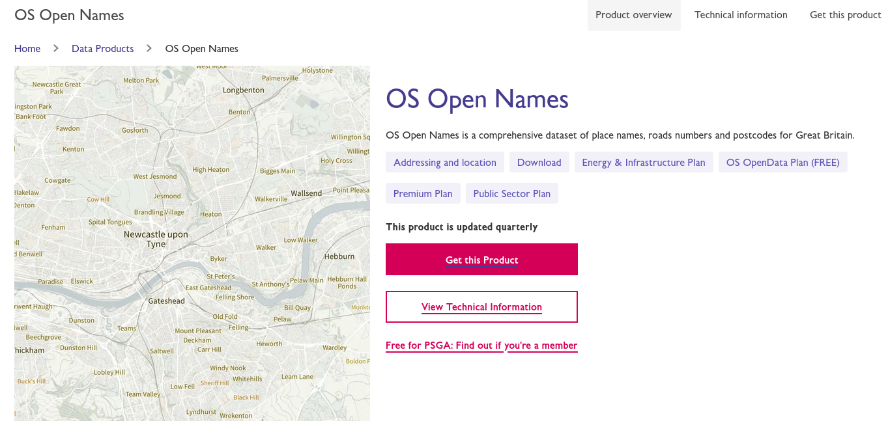
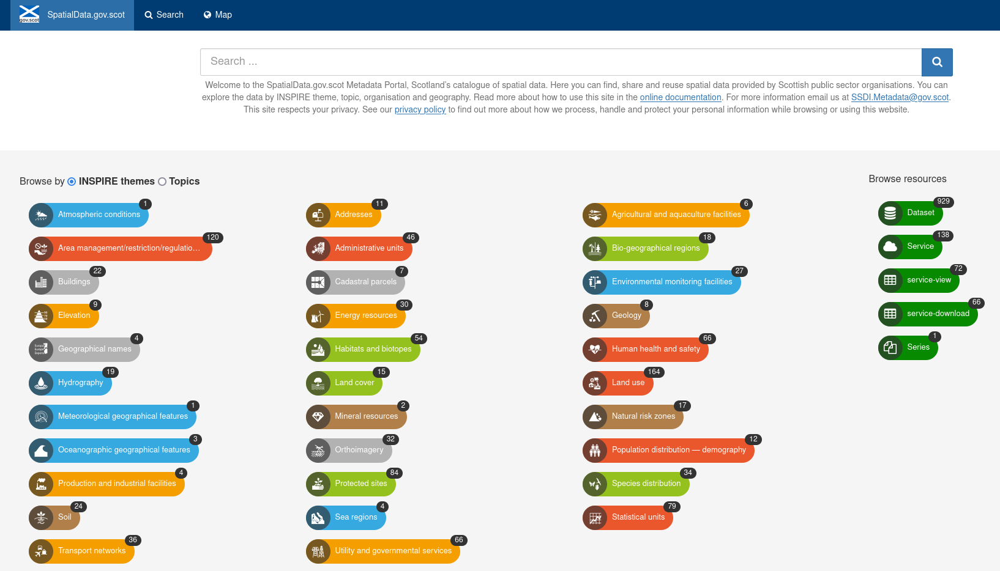

Making Metadata Great Again
A show and tell for Astun colleagues, May 2023 by Jo and Elena
Background
Why are we doing this?
Metadata needed for compliance
- Abstract
- Alternative Title
- Bounding Box
- Constraints (usage and licensing)
- Contact Details
- Date
- Extent Keyword
- Keywords (Controlled and Free Text)
- Lineage
- Spatial Reference System
- Resolution
- Temporal Extent
- Title
- Topic Category (controlled)
- Update Frequency
- Abstract
- Alternative Title
Bounding Box- Constraints (usage and licensing)
- Contact Details
Date- Extent Keyword
- Keywords (Controlled and Free Text)
- Lineage
Spatial Reference System- Resolution
- Temporal Extent
Title- Topic Category (controlled)
- Update Frequency
- Abstract
- Alternative Title
Bounding BoxConstraints (usage and licensing)Contact DetailsDate- Extent Keyword
- Keywords (Controlled and Free Text)
LineageSpatial Reference SystemResolutionTemporal ExtentTitle- Topic Category (controlled)
Update Frequency
- Abstract
- Alternative Title
Bounding BoxConstraints (usage and licensing)Contact DetailsDate- Extent Keyword
- Keywords (Controlled and Free Text)
LineageSpatial Reference SystemResolutionTemporal ExtentTitle- Topic Category (controlled)
Update Frequency
How?
Geographic Keywords
Non-Geographic Keywords

INSPIRE Keywords and Topic Categories
Everything Else
How will this work IRL?
🤔
Live Demo!!!

Experts in Place